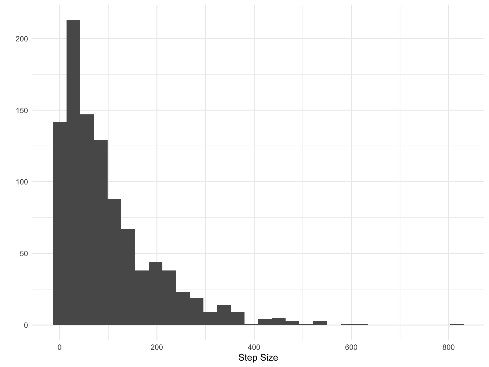

The role of data science in ecology and environmental sciences
Andy Hoegh
Montana State University
- Associate Professor of Statistics (on sabbatical)

My Research Philosophy
- “The best thing about being a statistician is that you get to play
in everyone’s backyard.” - John Tukey

My Research Philosophy
- “Problem first, not solution backward” - Jeff Leek

My Research Philosophy
- Create software for implementation

Statistics?

Statistics?

Statistics?

Data Science \(\neq\) Statistics

source: Anderson, et. al 2015
Matilda’s Thought Example
- Thursday 20 July at 1 PM: What is your (probabilistic) belief that the Matilda’s will win Group B in the World Cup?

Matilda’s Thought Example
- Thursday 20 July at 6:45 PM: What is your (probabilistic) belief that the Matilda’s will win Group B in the World Cup?

Matilda’s Thought Example
- Thursday 20 July at 9:15 PM: What is your (probabilistic) belief that the Matilda’s will win Group B in the World Cup?

Grizzly Bear Range in GYE

Aquatic Invasive Species

EDNA Biosurveillance
Vegetation Monitoring

with Frank van Manen and Mark Haroldson
Greater Yellowstone Ecosystem

Greater Yellowstone Ecosystem

Research Problem: Expanding Grizzly Range

Positional Data to Movement Modeling

Animal Movement Models
- Step Length:

- Angular Direction:

Independent Model

Collective Model

Meaghan Winder with Adam Sepulveda

Goal: evaluate current monitoring regime

Plankton Tows

Plankton Tows: Samples
Do we think zebra mussels are present?

Plankton Tows: Samples
How about now?

Sampling Intensity
For 90% detection, almost certainly need to increase sampling intensity

EDNA Biosurveillance
Christian Stratton with Adam Sepulveda

Goal: Develop computationally-efficient software for eDNA surveillance

Data Collection

Multiscale Occupancy Model
Two detection probabilities are necessary
- probability of detecting eDNA in bottle, given it is at site

- probability of detecting eDNA in the pipette, given it is in bottle
Efficient Computation and Software
Future Goals: Streaming analysis

Climate Monitoring in Grand Teton NP
with Christian Stratton and Kathi Irvine
Goal: Evaluate Monitoring Plan

Data collection

Data structure

Projection and Clustering

Victorville Precision Bombing Range

with Kenny Flagg and John Borkowski


Metallic Anomolies

Hot Spot Detection

Network Model

Spillover Risk